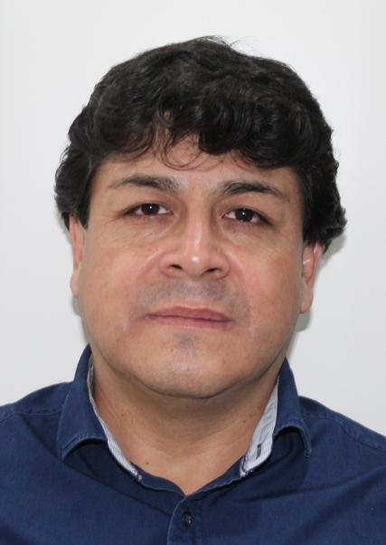

Candidato a Gobernador Regional de Cajamarca · Partido Democrático Somos Perú
Vicegobernadora Regional: Amparo Leocadia Ramírez Triveños
Cada cifra de este portal está tomada de un documento oficial —Instituto Nacional de Estadística e Informática, Oficina Nacional de Procesos Electorales, Jurado Nacional de Elecciones o el propio Plan de Gobierno presentado al Jurado— y la fuente se cita en la página de Documentos.
Nací en Tacabamba, provincia de Chota, el 7 de enero de 1972. Vivo en Sócota, provincia de Cutervo. Fui docente veintisiete años en la institución educativa San Lorenzo de Sócota, de 1995 a 2022. Fui alcalde de Sócota en dos periodos, 2007-2010 y 2015-2018, elegido por mis propios vecinos. Y entre 2023 y 2026 fui Gerente Sub Regional de Cutervo. Soy Profesional Técnico en Administración de Empresas por el Instituto Peruano de Ciencias Empresariales.
Mi hoja de vida está publicada en la plataforma Voto Informado del Jurado Nacional de Elecciones y no registra ninguna sentencia. Puede verificarlo usted mismo con el enlace de la página de Documentos.
El índice de brecha compara las 13 provincias entre sí en nueve carencias medidas por el Censo 2025: agua, desagüe, electricidad, seguro de salud, alfabetismo, nivel educativo, asistencia escolar, internet y documento de identidad. Hoy el nivel CRÍTICO lo tienen Chota, Celendín, Hualgayoc, San Marcos.
Lo que digo en plaza, con la cifra y la fuente al lado de cada promesa.
Las metas del Plan de Gobierno con su línea de base, su plazo y la competencia legal que las permite.
Mapa interactivo con las brechas de cada provincia, el ranking y las demandas prioritarias.
Plan de Gobierno, hoja de vida ante el Jurado Nacional de Elecciones y las bases de datos.